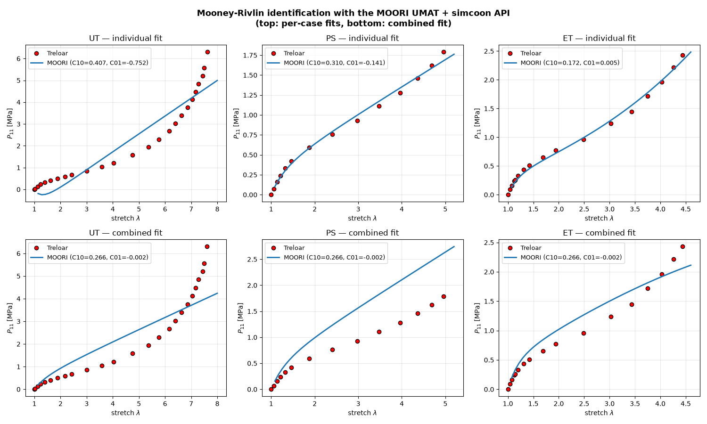

Note
Go to the end to download the full example code.
Mooney-Rivlin identification with the MOORI UMAT and the simcoon API
Identify the Mooney-Rivlin parameters \(C_{10}, C_{01}\) from Treloar’s rubber data using simcoon “as it ships”:
Forward model: the real
MOORIhyperelastic UMAT, driven bysimcoon.solver()exactly as it would run inside a finite-element analysis (this is the same forward model asHYPER_umat.py). The transverse-equilibrium condition (zero stress on the free faces) is handled inside the solver through mixed control, so there is no hand-writtenfsolveloop.Optimizer:
simcoon.identification()(a thin wrapper aroundscipy.optimize.differential_evolution) reading bounds fromsimcoon.parameter.Parameterobjects.Cost:
simcoon.calc_cost()with the"nmse_per_response"metric.
This is the library-native counterpart of
examples/analysis/hyperelastic_parameter_identification.py, which solves
the same problem with a hand-rolled analytical stress and a manual
scipy/sklearn cost. Both are kept on purpose: the analytical version is
fast and exposes the physics; this one exercises the deployable UMAT and the
identification API. See the cost-function section for the exact correspondence.
Loading / control. Each Treloar test is a homogeneous diagonal stretch run
under Biot control (#Control_type(NLGEOM) 4): the prescribed “strain”
is the stretch \(U_{11}\) itself and the work-conjugate Biot stress is set
to zero on the free faces. That is why the load-path files read E 4.6 for
equibiaxial (\(\lambda \approx 4.6\)) and hold the constrained pure-shear
direction at E 1.0 (\(\lambda = 1\)).
# sphinx_gallery_thumbnail_number = 1
import os
import numpy as np
import pandas as pd
import matplotlib.pyplot as plt
import simcoon as sim
from simcoon.parameter import Parameter
from simcoon.identify import identification, calc_cost
Configuration
The Mooney-Rivlin strain energy is
and the MOORI UMAT takes the props vector [C10, C01, kappa]. We
identify \(C_{10}\) and \(C_{01}\) and keep the bulk modulus
\(\kappa\) fixed (near-incompressible rubber).
UMAT_NAME = "MOORI"
NSTATEV = 1
SOLVER_TYPE = 0 # Newton
CORATE_TYPE = 2 # same objective rate as HYPER_umat.py
KAPPA = 10000.0 # fixed bulk modulus [MPa]
# Treloar loading cases: label, load-path file, and the matching Treloar.txt
# columns (stretch / first Piola-Kirchhoff stress). The ``*_id`` paths use a
# coarser increment than HYPER_umat's, fast enough for many optimizer calls.
CASES = [
("UT", "path_UT_id.txt", "lambda_1", "P1_MPa"), # uniaxial tension
("PS", "path_PS_id.txt", "lambda_2", "P2_MPa"), # pure shear
("ET", "path_ET_id.txt", "lambda_3", "P3_MPa"), # equibiaxial tension
]
# Columns of the solver ``*_global-0.txt`` output produced by
# ``data/output.dat`` (strain_type 4 = stretch U, stress_type 1 = PK1):
# the loading stretch lambda_1 and the nominal stress P_11.
LAMBDA_COL = 10
PK1_COL = 11
# Reference parameters (Steinmann et al., 2012) for the final comparison.
LIT = {"UT": (0.2588, -0.0449), "PS": (0.2348, -0.0650), "ET": (0.1713, 0.0047)}
def make_params():
"""Fresh Parameter pair (identification writes the result back into
``.value``, so every fit gets its own)."""
# Same search box as the analytical example, for a fair comparison.
return [
Parameter(0, bounds=(0.01, 2.0), key="@C10"), # C10 [MPa]
Parameter(1, bounds=(-1.0, 1.0), key="@C01"), # C01 [MPa]
]
def build_props(x):
"""MOORI props vector ``[C10, C01, kappa]`` from the optimizer array."""
return np.array([x[0], x[1], KAPPA])
Forward model: the MOORI UMAT through sim.solver
For one loading case we run the solver over the prescribed stretch ramp and
read the (lambda, P_11) trajectory straight from its global output.
Because the experimental points sit at specific stretches, we interpolate the
(smooth) model trajectory onto the experimental lambda values. A tab-file
replay, as in chaboche_cyclic_identification.py, could hit the
experimental stretches exactly; interpolation keeps the load paths simple.
def run_case(props, pathfile, outputfile, path_data, path_results):
"""Run one solver call and return its ``(lambda, P_11)`` trajectory."""
sim._core.solver(
UMAT_NAME, props, NSTATEV,
0.0, 0.0, 0.0, # psi, theta, phi (no RVE rotation)
SOLVER_TYPE, CORATE_TYPE,
path_data, path_results,
pathfile, outputfile,
)
base = outputfile[:-4] if outputfile.endswith(".txt") else outputfile
out = np.loadtxt(os.path.join(path_results, f"{base}_global-0.txt"))
return out[:, LAMBDA_COL], out[:, PK1_COL]
def model_pk1(lambda_exp, props, pathfile, outputfile, path_data, path_results):
"""Model ``P_11`` sampled at the experimental stretches."""
lam, pk1 = run_case(props, pathfile, outputfile, path_data, path_results)
# Anchor the unstressed reference state so lambda = 1 maps to P_11 = 0.
lam = np.concatenate(([1.0], lam))
pk1 = np.concatenate(([0.0], pk1))
return np.interp(lambda_exp, lam, pk1)
Cost function: sim.calc_cost with NMSE-per-response
The analytical example
(examples/analysis/hyperelastic_parameter_identification.py) builds its
combined cost by hand: for each loading case it takes the
mean_squared_error and divides by the variance of the experimental data
(an NMSE), then sums the cases. That normalisation is exactly what
simcoon.calc_cost() provides via metric="nmse_per_response" — each
response (here the stress column of each test) is divided by its own sum of
squares before averaging, so UT, PS and ET contribute on an equal footing
despite their different stress magnitudes. We hand-rolled it there; we simply
call the library here.
calc_cost expects one 2-D array of shape (n_points, n_responses) per
test; with a single stress response per test the arrays are (n_points, 1).
def cost(x, jobs, path_data, path_results):
"""NMSE-per-response cost over the loading cases in *jobs*.
*jobs* is a list of ``(name, pathfile, lambda_exp, P_exp)`` tuples.
"""
props = build_props(x)
y_exp, y_num = [], []
for name, pathfile, lam_exp, P_exp in jobs:
try:
P_model = model_pk1(
lam_exp, props, pathfile, f"id_{name}.txt",
path_data, path_results,
)
except Exception:
return 1e12
y_exp.append(P_exp.reshape(-1, 1))
y_num.append(P_model.reshape(-1, 1))
return calc_cost(y_exp, y_num, metric="nmse_per_response")
def identify(jobs, path_data, path_results, popsize=15, maxiter=25, seed=42):
"""Run ``sim.identification`` over the given *jobs*; return ``([C10, C01],
final_cost)``."""
params = make_params()
result = identification(
cost, params,
args=(jobs, path_data, path_results),
seed=seed, popsize=popsize, maxiter=maxiter, tol=1e-6, disp=False,
)
return [p.value for p in params], result.fun
Driver
Two identification strategies, mirroring the analytical example:
Individual — one
(C10, C01)pair fitted to each loading case.Combined — a single pair fitted to all three cases at once.
def main():
try:
script_dir = os.path.dirname(os.path.abspath(__file__))
except NameError:
script_dir = os.getcwd()
os.chdir(script_dir)
path_data = "data"
path_results = "results"
os.makedirs(path_results, exist_ok=True)
df = pd.read_csv(
os.path.join("comparison", "Treloar.txt"),
sep=r"\s+", engine="python",
names=["lambda_1", "P1_MPa", "lambda_2", "P2_MPa", "lambda_3", "P3_MPa"],
header=0,
)
# Per-case experimental (lambda, P_11), NaNs dropped.
exp = {}
for name, _pf, lc, pc in CASES:
mask = ~df[lc].isna() & ~df[pc].isna()
exp[name] = (df.loc[mask, lc].values, df.loc[mask, pc].values)
print("=" * 66)
print(" MOONEY-RIVLIN IDENTIFICATION via the MOORI UMAT + simcoon API")
print(" forward: sim.solver | cost: sim.calc_cost(nmse_per_response)")
print("=" * 66)
for name, _pf, _lc, _pc in CASES:
lam, P = exp[name]
print(f" {name}: {len(lam)} pts, lambda in [{lam.min():.2f}, {lam.max():.2f}]")
# ----- Individual fits ------------------------------------------------ #
print("\n" + "-" * 66)
print(" INDIVIDUAL FITS (one parameter set per loading case)")
print("-" * 66)
print(f"{'Case':<6}{'C10':>10}{'C01':>10}{'C10 lit.':>12}{'C01 lit.':>12}")
individual = {}
for name, pathfile, _lc, _pc in CASES:
lam_exp, P_exp = exp[name]
(c10, c01), _fun = identify(
[(name, pathfile, lam_exp, P_exp)], path_data, path_results
)
individual[name] = (c10, c01)
l10, l01 = LIT[name]
print(f"{name:<6}{c10:>10.4f}{c01:>10.4f}{l10:>12.4f}{l01:>12.4f}")
# ----- Combined fit --------------------------------------------------- #
print("\n" + "-" * 66)
print(" COMBINED FIT (single parameter set for UT + PS + ET)")
print("-" * 66)
jobs = [(n, pf, *exp[n]) for n, pf, _lc, _pc in CASES]
(c10_c, c01_c), cost_c = identify(jobs, path_data, path_results)
print(f" C10 = {c10_c:.4f} MPa, C01 = {c01_c:.4f} MPa "
f"(NMSE/response = {cost_c:.4e})")
# ----- Plot: individual (top) and combined (bottom) vs Treloar -------- #
fig, axes = plt.subplots(2, 3, figsize=(15, 9))
for col, (name, pathfile, _lc, _pc) in enumerate(CASES):
lam_exp, P_exp = exp[name]
for row, (c10, c01, tag) in enumerate([
(*individual[name], "individual"),
(c10_c, c01_c, "combined"),
]):
ax = axes[row, col]
lam_m, pk1_m = run_case(
build_props([c10, c01]), pathfile,
f"plot_{name}_{tag}.txt", path_data, path_results,
)
ax.plot(lam_exp, P_exp, "o", ms=6, mfc="red", mec="black",
label="Treloar")
ax.plot(lam_m, pk1_m, "-", lw=2, color="tab:blue",
label=f"MOORI (C10={c10:.3f}, C01={c01:.3f})")
ax.set_xlabel(r"stretch $\lambda$")
ax.set_ylabel(r"$P_{11}$ [MPa]")
ax.set_title(f"{name} — {tag} fit")
ax.grid(True, alpha=0.3)
ax.legend(loc="upper left", fontsize=9)
fig.suptitle(
"Mooney-Rivlin identification with the MOORI UMAT + simcoon API\n"
"(top: per-case fits, bottom: combined fit)",
fontsize=13, fontweight="bold",
)
plt.tight_layout()
plt.show()
if __name__ == "__main__":
main()

==================================================================
MOONEY-RIVLIN IDENTIFICATION via the MOORI UMAT + simcoon API
forward: sim.solver | cost: sim.calc_cost(nmse_per_response)
==================================================================
UT: 25 pts, lambda in [1.00, 7.61]
PS: 14 pts, lambda in [1.00, 4.96]
ET: 17 pts, lambda in [1.00, 4.44]
------------------------------------------------------------------
INDIVIDUAL FITS (one parameter set per loading case)
------------------------------------------------------------------
Case C10 C01 C10 lit. C01 lit.
UT 0.4072 -0.7524 0.2588 -0.0449
PS 0.3104 -0.1407 0.2348 -0.0650
ET 0.1716 0.0047 0.1713 0.0047
------------------------------------------------------------------
COMBINED FIT (single parameter set for UT + PS + ET)
------------------------------------------------------------------
C10 = 0.2659 MPa, C01 = -0.0017 MPa (NMSE/response = 8.2414e-02)
Total running time of the script: (0 minutes 25.011 seconds)